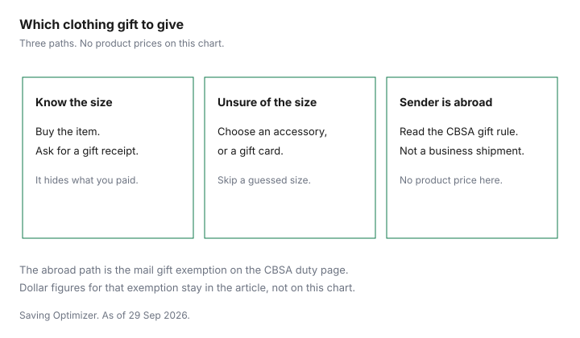

Clothing · Canada
Clothing Gifts Without Waste in Canada: Gift Cards, Exchanges and Sizes That Fit
The least wasteful clothing gift in Canada is an item with a gift receipt when you know the size, or an accessory or gift card when you do not. In Ontario, most retail gift cards cannot expire or carry dormancy fees. The unworn gift is the expensive one. A size that is close, a colour they did not want, and a final-sale tag together produce a garment that sits in a drawer or a return that misses the window. The cheaper gift is often the less specific one: a card, a sock, a hat, or an item with a gift receipt and a date written on the bag. This page is the clothing version of that choice, with the provincial gift-card rules that actually change the value of the card. It is education, not legal advice. Confirm a parcel from outside Canada with the CBSA Border Information Service at 1-800-461-9999 or with the carrier.
Key takeaways
- Know the size and the return window: an item plus a gift receipt. Unsure of the size: an accessory or a gift card. A sender outside Canada: read the CAN$60 gift rule before anyone calls it duty-free.
- Ontario, page updated 14 August 2026: most retail gift cards cannot expire and cannot carry dormancy fees. Mall cards are the exception, with an activation fee up to $1.50 and, after 15 months, a dormancy fee up to $2.50 a month.
- Quebec, page last updated 3 May 2021: a prepaid card that works like cash cannot carry an expiry date. British Columbia: a dollar-value card cannot expire, and store credit from a clothing return can. Other provinces: check your province.
- CBSA, checked 29 Sep 2026: a personal gift of CAN$60 or less by mail is duty- and tax-free. Above that, only the amount over $60 is assessed. A business shipment does not qualify, and the gift rule does not stack with the $20 mail exemption.
- Holiday timing and final sale live on the holiday return guide. Kids’ clothing tax rules live on the kids’ clothing guide. Do not duplicate them here.
When clothing gifts work and when they don't
A clothing gift works when three things are already true. You know the size from a garment they wear, not from a guess.
The item is not final sale. The return or exchange window still open on the day they unwrap it is long enough to get back to that store. If any one of those is false, the gift is a gamble. The Black Friday and Boxing Day guide is about when the price is real. It does not make a wrong size cheaper to live with.
Fitted clothes fail this test more often than accessories. Jeans, bras, dress shirts and boots need the person in them. A beanie, wool socks, or a gift card does not. The fibre label can still matter on the accessory: the Competition Bureau’s textile page says a fibre at 5 percent or more of the mass has to be named, in English and French, with the percentage. That is how you avoid buying “wool” that the label does not support. It is not a sizing tool.
Write the plan on the bag: size source, last return day, gift receipt yes or no, final sale yes or no. If you cannot fill the size source, change the gift. The chart at the end is that fork, including the fork for a sender outside Canada.
Gift cards: fees, expiry rules and discounted cards
A clothing gift card is only as good as the law of the province where the card was sold, plus the words on the card. Ontario’s “Buying or using gift cards” page, updated 14 August 2026 and checked 29 Sep 2026, says most retail gift cards cannot expire, so the balance remains until it is spent.
Restrictions have to be in clear writing. Cards for one specific service, such as a spa treatment, and cards issued for a charitable purpose, can expire. Loyalty cards and prepaid credit cards are outside the gift-card rules. Most businesses cannot charge an activation fee or a dormancy fee. They can charge to customize a card or to replace a lost or stolen one. Shopping-mall cards are the special case: activation up to $1.50, value held for 15 months, then a dormancy fee up to $2.50 a month, with a three-month extension if you ask the issuer during the 15th month. Whether HST applies to the purchase of a card is a question for the CRA at 1-800-959-5525. This page does not answer it.
Quebec’s Office de la protection du consommateur page on prepaid cards that can be used as cash, last update 3 May 2021, checked 29 Sep 2026, says a merchant cannot indicate an expiry date or set a period after which the card can no longer be used. A card bought for $50 keeps that value until it is used. An expiry date on or after 30 June 2010 is not valid. British Columbia’s Consumer Protection BC page, checked 29 Sep 2026, says a card, voucher or credit for a specific dollar amount cannot expire, with exceptions for a specific good or service, a card sold at a discount in the sense that page describes, a charitable card, and cards bought before 2009. The same page says store credit from the return of a non-refundable piece of clothing can expire, because that credit is not a gift card. Mall cards in B.C. follow the same $1.50 and $2.50 pattern as Ontario, under the Prepaid Purchase Cards Regulation. Alberta and every other province: check your province.
| Province | Expiry on most retail gift cards | Dormancy or extra fees |
|---|---|---|
| Ontario | Banned for most retail cards. Allowed for a single service and for charitable cards. Page updated 14 Aug 2026. | Activation and dormancy fees banned for most cards. Customize and lost-card replacement allowed. Mall cards: activation up to $1.50, then up to $2.50 a month after 15 months. |
| Quebec | Prohibited on a prepaid card that can be used like cash. Page last updated 3 May 2021. | This page’s expiry article does not set a dormancy fee. Read the card and the OPC fee page before you assume a fee is legal. |
| British Columbia | A specific dollar-value card cannot expire. Store credit from a non-refundable clothing return can. Checked 29 Sep 2026. | Personalizing and replacing a card can cost a fee. Mall cards: up to $1.50 at purchase, then up to $2.50 a month after 15 months, with a 3-month extension if you ask. |
| Alberta and other provinces | Check your province | Check your province |
A discounted gift card is worth buying only after those rules. Pay less than face value, from a seller you can identify, for a banner the person actually shops. A cash-back portal on the purchase is a second offer type. The grocery gift-card guide shows how portal tiles treat gift cards, including exclusions. Do not assume a clothing card inherits a grocery tile. Read the tile. A card that excludes the sale rail, or that the store treats as final sale the way lululemon treats its gift cards, is a worse gift than a plain receipt.
Gift receipts and exchange windows
The gift receipt is the path when the item is right and the size might be one step off. It lets the recipient exchange without seeing what you paid.
It does not lengthen a window the store did not print. The holiday return guide is where 2026 dates are handled: if the retailer has not published a 2026 extension, the ordinary window is the one on the page. lululemon Canada, checked 29 Sep 2026, uses 30 days and will not process the return at an outlet. H&M Canada uses 30 days after receipt. The return-policy guide is the year-round version.
Put the receipt in the box, not in your own files. Tell the person the last day in the same message as the tracking number, if the gift is shipped. A receipt that arrives after the window is a souvenir.
Practical gifts: socks, base layers, winter accessories
The low-risk clothing gifts are the ones that do not depend on a waist measurement. Socks, a neck warmer, a beanie, and mittens still need a fibre you can defend from the label.
Before you buy children’s clothing online, search recalls-rappels.canada.ca for the product. A base layer is a useful gift when you know they walk or commute in the cold and you know the size. If you know neither, it is the same gamble as a coat. The base-layer guide compares fibres without naming a best brand.
Care symbols on the Office of Consumer Affairs guide are information. The national care-labelling standard was withdrawn by the Canadian General Standards Board in October 2017. Five symbols still show wash, bleach, dry, iron and professional cleaning on many labels. Follow the label in the garment. Do not invent a “wool is always hand wash” rule the label does not print.
Setting a family gift budget
Agree the cap before anyone shops. One number per person, written down, stops the Christmas coat that blows the month.
A clothing line in the household budget is the monthly clothing budget guide. This page does not add a second average. Split the cap into a default gift and a small overflow only if a size is certain. If the certain item is over the cap, give the card for the cap and let them add their own money. That is less waste than a coat they return in January, or never return.
| Gift | Size risk | Return path | Waste risk |
|---|---|---|---|
| Item with a gift receipt | Low only if the size came from a garment they wear | The store’s window. No 2026 holiday date unless that page prints one. | Final sale, a missed window, or a credit that is not cash |
| Retail gift card | None | Spend it. Expiry follows the province. Ontario and Quebec ban expiry on the cards those pages describe. B.C. bans it on a dollar-value card. | Wrong banner, a mall-card fee, or a card they will not use |
| Accessory or socks | Low | Same as any clothing return at that store | Fibre the label does not support, or a colour they dislike |
| Experience, such as a fitting or a class | None for clothing size | The seller’s terms. A single-service certificate can expire in Ontario. | A date they cannot attend |

Sources & date stamps
- Ontario, Buying or using gift cards, updated 14 August 2026, checked 29 Sep 2026. Expiry ban, fee ban, mall-card $1.50 and $2.50, CRA phone line for HST on a card purchase.
- Ontario, Returns, exchanges and warranties, updated 25 September 2024, checked 29 Sep 2026. No general right to return.
- Quebec, OPC, expiry rules for prepaid cards that may be used as cash, last update 3 May 2021, checked 29 Sep 2026.
- Consumer Protection BC, Gift cards, checked 29 Sep 2026. Dollar-value cards, store credit from a clothing return, mall-card fees.
- CBSA, Importing by mail or courier: Determining duty and taxes owed, checked 29 Sep 2026. CAN$60 gift, CAN$200 example taxed on CAN$140, business shipments excluded, no stacking with the $20 exemption.
- Competition Bureau, Labelling textile requirements in a nutshell, checked 29 Sep 2026. Fibre at 5 percent, bilingual fibre names, dealer identity.
- Health Canada recalls and safety alerts, recalls-rappels.canada.ca/en, checked 29 Sep 2026. Search the product before you gift children’s clothing. This guide does not restate a wash or drawstring rule from a page that is not cited here.
- Office of Consumer Affairs, Guide to Apparel and Textile Care Symbols, checked 29 Sep 2026. Care-labelling standard withdrawn October 2017. Five symbols.
- lululemon Canada return policy, checked 29 Sep 2026. Gift cards are final sale.
Frequently asked questions
Can clothing gift cards expire in Canada?
It depends on the province and on whether the card is a gift card or store credit. Ontario’s page, updated 14 August 2026, says the Consumer Protection Act bans expiry dates on most retail gift cards, and bans dormancy fees. A card for one specific service, and a charitable card, can expire. Mall cards can keep their value for 15 months and then carry a dormancy fee of up to $2.50 a month, after an activation fee of up to $1.50. Quebec’s prepaid-card page, last updated 3 May 2021, says a card that works like cash cannot show an expiry date. British Columbia says a dollar-value card cannot expire, and that store credit from a clothing return can. Alberta and the other provinces: check your province.
Is a gift card or a gift receipt better for clothes?
A gift receipt is better when you know the size and the store’s return window still fits the holiday. The recipient exchanges the item, and the risk is a final-sale tag or a short window. A gift card is better when you do not know the size. The risk moves to expiry and fees, which the provincial page either bans or allows you to check. lululemon’s Canada policy treats its own gift cards as final sale. A card that can be spent on clothes is not the same thing as a card the store will take back.
How do I guess a size without asking?
Do not guess a fitted size from a memory of last winter. Use a size they already wear, from a label in a similar garment, or buy a category with almost no size risk: socks, a beanie, or a gift card. The textile label, when the garment is sold in Canada, has to show fibre content in English and French for fibres at 5 percent or more, and the dealer’s name and address or a CA number. That label tells you the fibre. It does not tell you the person’s size. If you are unsure, the decision chart says accessory or gift card.
Can someone mail me a clothing gift from outside Canada without duty?
Sometimes. CBSA’s page on duty and taxes owed, checked 29 September 2026, says a gift sent personally by a friend or relative, with a card or notice that it is a gift, worth CAN$60 or less, comes in by mail with no duty or tax. Above CAN$60, duty and taxes apply to the amount over CAN$60. CBSA’s example is a CAN$200 gift, taxed on CAN$140. Items sent by a business do not qualify, and the $60 gift exemption cannot be combined with the $20 mail exemption. A shop shipping a “gift” is a business shipment. Check with CBSA at 1-800-461-9999 or your carrier if the parcel does not match that description.
Are discounted gift cards a good way to buy clothing gifts?
They can be, when the discount is real, the card is the retailer’s own card, and the province’s expiry and fee rules still leave you the full balance. A discounted gift card is an offer type. This page does not quote a live discount or name a best seller of cards. Read the card terms before you pay, including any portal rule that drops cash back when you buy a gift card. The grocery gift-card guide is the longer version of that paperwork. A card for a store the person never enters is waste, even at a discount.
Researched and drafted with AI assistance and fact-checked against official Canadian sources. How we create content.
Disclosure: Discounted retailer gift cards and cash-back portal offers are offer types. Saving Optimizer may earn a commission if a partner link is added later. No partnership is claimed. A discount on a card does not change provincial expiry rules or a store’s return window. Education only.